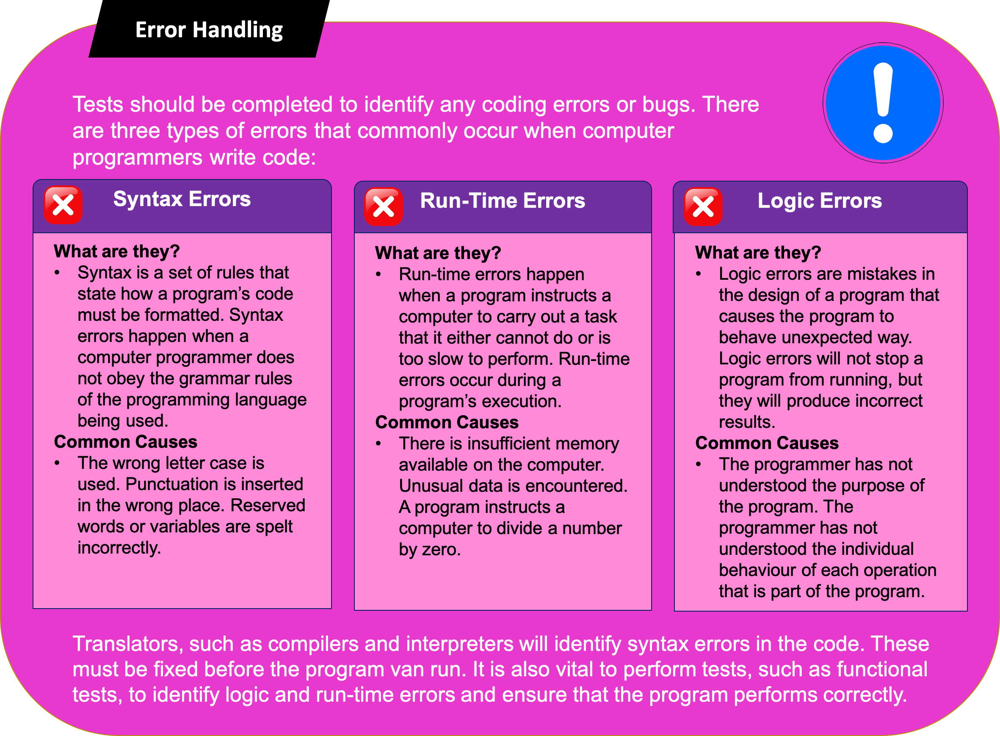

3.2.8 Robust and Secure Programming
Table of Contents
- 1. Validation
1 Validation
Learn It: What is validation?
Validation – Is when a program checks if the data being entered into the computer/device is reasonable, sensible and suitable. This a called data validation. For example, checking that a person’s DOB is not in the future or that the string is not empty. Validation does not ensure that data is correct.
- Most commercial programs or web applications require
some formofuser inputtoensurethat theprogramwill not crash or do something unexpectedly if a user enters something incorrectly. - Therefore,
all datamust be checked as soon as it isinputted. - Validation can
only checkif a data input item isreasonable, itcannotcheck ifit's correct. - If a web application asks the user for their
date of birth, that application can check that the data entered would beappropriatefor a particular age group. (i.e. Over 18), but itcannot checkif you enteredDecemberinstead ofJanuarybymistake. - Although validation can help ensure that any
data enteredissensible, verification double checks that the data has been entered correctly. This is an important difference. - Data is usually
entered twiceand thetwo versionsarecompared. If they are different, then theuserispromptedtotry again. - This is commonly used with
username/emailandpasswordsthat are entered on applications.
There are several different types of validation checks that can be used:
- Range Check – A number or date should be within a sensible or allowed or specific range.
- Type Check – Ensures that the correct data type has been entered such as, an integer, float, string or Boolean.
- Length Check – Ensures that a string contains a valid number of characters that is not too short or long, for example, a password is greater than 8 characters or a National Insurance Number is no longer than 9 characters.
- Presence Check – This checks that the user input is not left blank/empty. This is essentially a length check that ensures that the length is greater than zero.
- Format Check – Checks the format of the input, for example, a postcode or email address is appropriate.
Range Check Example:
- The following algorithm asks the user to enter an integer between 5 and 10, which is validated by using a while loop that performs a range check. The number is then multiplied by 2 and outputted.
Type Check Example:
- The following algorithm asks the user to something, and performs a type check to identify whether it is a string, integer or a float number.
Length Check Example:
- The following algorithm asks the user to enter their name, and performs a length check. The name must be between 2 and 20 characters.
Presence Check Example:
- The following algorithm asks the user to enter a sentence which uses the .lower() method to return the lowercased string from the given string and performs a presence check.
Format Check Example:
- The following algorithm asks the user to enter their nine-digit National Insurance Number, and performs a format check using string formatting. The number must be 9 characters long and in the format of: LLNNNNNNL.
Learn It: Validation through Menus
Creating menus
- One easy way to
controlwhat auser entersinto a system is to usemenu commandsandoptionsthat you want to display for users. - They can then
enteraletteror anumberto select the option they want. - This is
another wayofvalidating datathrough the use ofmenuswith setoptionsto choose from, you can useif statementsto give thecorrect response, depending on how the user answers. - Below is an
example menu algorithmthat uses letters for theoptionsand whatever letter is typed in isconvertedtolowercasebefore the if statement starts.
Badge It: Coding Challenge
Silver - Validating Input (5 Marks)
- Create a Python program that will ask the user to input two numbers between 1 and 100.
- Use a subroutine to find out if the data is valid or not. After valid numbers have been inputted the program should show them a menu giving them the option to either add or multiply the numbers together and keep asking for their menu selection until they enter a valid option.
- Use subroutines to perform the correct calculation and display the final answer in a user-friendly format (i.e. display a message such as “The answer is…”)
Upload to Fundamentals of 3.2 Programming - 3.2.8 Robust and Secure Programming: Silver on BourneToLearn
Learn It: Try and Except
Try and Except
- Sometimes the
usercan make amistakeandcrash the programwhich can be very frustrating. - Instead of letting the program
crash, it is much moreuser friendlyto show them an error message so they can try again. - This is where the
“Try and Except”can help. It works in a similar way to anif statement, but instead ofcrashing the programit willrunthecatch(or except) block.
Learn It: Creating Simple Authentication Routines
Authentication – This is the process of recognising a user’s identity. It is the mechanism of associating an incoming request with a set of identifying credentials. The credentials provided are compared to those on a file in a database of the authorised user’s information on a local operating system or within an authentication server. The software process of ensuring that the person accessing a system is the person who is supposed to access that system.
- Often a computer system will
requireausertologinto ensure that they areauthorisedto use the system.
The following authentication methods might be used:
- User ID and passwords.
- Memorable Information – Prompting the user for something only the real user should know, such as a favourite place or the name of their first pet.
- Checking that the user is using their usual computer, by logging their IP address.
- Biometric Methods such as, optical, facial or fingerprint recognition.
Authentication techniques are used throughout the Cyber Security world.
- A simple identification routine is used when you log into the school network, or an online shopping site.
- Usually you’ll be assigned a
user IDand you choose apasswordwhen you first login. - The password is
encryptedandsavedin afile. - When you enter your
user IDandencrypted passwordit iscomparedto theone storedfor that user ID.
Example Verification login:
- User ID verification is
usedwhen anew useris logging on to a website for thefirst time, they are prompted tochoose a password, and then have tore-enterit toverifythat they havetyped itincorrectly.
The following algorithm demonstrates a simple verification process: Example Password Authentication algorithm:
Badge It: Coding Challenge
Gold - User Authentication (8 Marks)
- Create a simple authentication routine that uses a username and password.
- The username and password does not require encrypting and can be in plain text.
- The username must have at least 4 characters and the password must have at least 8 characters.
- Users should only be given 3 attempts to login, before being given a ‘locked out’ message and the program should terminate.
- A welcome message should be given for successful logins.
Upload to Fundamentals of 3.2 Programming - 3.2.8 Robust and Secure Programming: Gold on BourneToLearn
Learn It: Testing your Programs
Testing – When developing a program, tests should be performed throughout the process to ensure that the program functions correctly, is error free and meets the specification requirements.
- How do you know that your programs work correctly?
- They may run and produce some output, but you also need to test that it has worked as expected.
- We need to test our programs using sensible values to put into our programs to ensure that the outputs are what we expect.
Error Handling  Types of Data to Test
- There are three types of data that we should consider.:
- Normal (Typical) Data.
- Boundary (Extreme) Data.
- Erroneous Data.
Normal(Typical) Data - Data that is valid and that represents how the program would be used. It is data you are expecting, for instance if you are asking for an integer between 3 and 20 you should test some data that is an integer between 3 and 20, for instance 7.
Boundary(Extreme) Data – Data that is just barely valid, to check that the extreme ranges of normal input work correctly. It is data that is on the boundaries. If you are asking for a number between 3 and 20 inclusive, then test 3 and 20 as well as 0 and 21 to check that the boundaries of the range are working as you expect.
Erroneous Data – Data that should not be accepted by the system. It is data that is just wrong. If you are asking for an integer test what happens when you enter a number with a decimal point or a string?
Learn It: Test Planning
Test Plan
- The
best wayto approachtestingis todevise a test plan, where we canwrite downthe sample data we will use toensurethat the program works correctly. - The
main aim of testingis to identify errors such as, syntax, logical and run-time errors as-well as dealing with invalid user inputs that stops the program fromworking correctly. - The
first four columnsare part of the design and planning stage and thefinal columnis completed when you test the finished program. - If numbers or dates are being added by the user, then you
should usetest data that checks; Normal (typical), Boundary (extreme) and Erroneous data. - Boundary data
includes both endsof theallowed range, as well asdatathatshould not be allowed, justoutside this range. (i.e. 2 or 21).
Learn It
- We can also perform some tests without the use of a computer or any of the real code.
- Often, when we write an algorithm, we'll want to test that it works correctly.
- We can use trace tables to achieve this.
X <-- 1
Y <-- 2
WHILE X < 20
OUTPUT X
X <-- X + Y
Y <-- Y + 1
ENDWHILE
- The variable in the above pseudocode algorithm can traced using a trace table.
| OUTPUT | X | Y |
|---|---|---|
| 1 | 2 | |
| 1 | 3 | 3 |
| 3 | 6 | 4 |
| 6 | 10 | 5 |
| 10 | 15 | 6 |
| 15 | 21 | 7 |
- The trace table allows us to understand what is happening to the values of variables within the algorithm.
Try It
- Try drawing trace tables for the following algorithms.
Y <-- 3
FOR X <-- 1 TO 5
Y <-- Y + X
ENDFOR
OUTPUT Y
List <-- [10,8,3,5,6,1,2]
Total <-- 0
FOR i <-- 1 TO LEN(List)
TOTAL <-- TOTAL + List[i]
ENDFOR
OUTPUT TOTAL
num <-- 78
answer <-- ''
WHILE num > 0
r <-- num MOD 2
num <-- num / 2
answer <-- STR(r) + answer
ENDWHILE
OUTPUT answer
nums = [6,2,8,1,9,2]
n = 0
FOR i <-- 1 TO LEN(nums)
IF nums[i] > n
n = nums[i]
ENDIF
ENDFOR
OUTPUT n
Badge It: Exam Questions
Platinum - Exam questions
- A program is only as good as its data. Explain how validation and verification can help ensure that the data is as 'good' as possible? (6 Marks)
- Describe one method of validation used by online surveys to help them manage the quality of their data? (2 Marks)
- Validation is required for the data in the parameters for the function below. Set a test, and show an example of invalid data (2 Marks)
- Give two reasons why programmers test their code? (2 Marks)
- A program requires a date of birth from the 20th century to be entered. Provide normal, extreme and erroneous test data examples in the format DD/MM/YYYY. (3 Marks)
Function WorkingTime (TimeIn,TimeOut)
Upload to Fundamentals of 3.2 Programming - 3.2.8 Robust and Secure Programming: Platinum on BourneToLearn